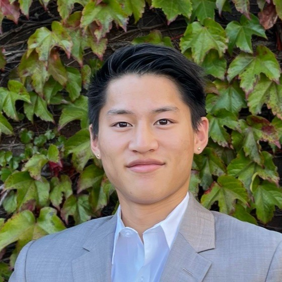

Artificial Intelligence and Mechanical Engineering for real-world autonomy.
I build systems that sense, decide, and act in physical environments, from semiconductor equipment and robotic sorting cells to reinforcement learning planners and occlusion-aware vision models.

About Me
I like building intelligent systems that have to work outside the lab. My background spans semiconductor manufacturing, robot integration, autonomous planning, and deep learning for perception under difficult operating conditions.
The throughline in my work is reliability under constraints: hardware that has to stay online, models that have to react in real time, and engineering decisions that need to survive contact with the real world.

Leo Shaw
Impact Highlights
Ulvac Technologies - Field Service Engineer I
- Upgraded an etch chuck assembly to support 8-inch wafers, improving uniformity and reducing downtime by 15%.
- Maintained semiconductor tools across six high-volume fabs, increasing uptime by 18%.
- Executed 30+ retrofit projects spanning vacuum, RF, PLC, HMI, and motion-handling subsystems.
Conveyor-Belt Object Detection and Robotic Sorting
- Built a real-time YOLO and OpenCV pipeline for mixed-object detection on a moving conveyor.
- Mapped detections into world coordinates with homography calibration for downstream robot actions.
- Integrated a delta-arm sorting cell with stabilized labels and retraining workflows for new object classes.